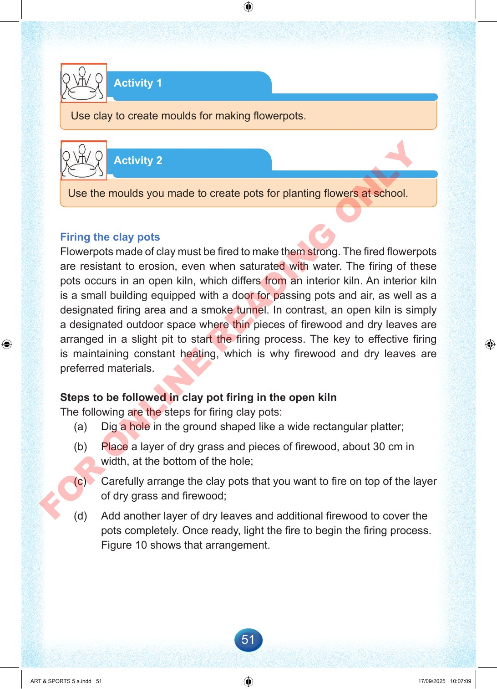

51
Activity
1
Use
clay
to
create
moulds
for
making
flowerpots.
Activity
2
Use
the
moulds
you
made
to
create
pots
for
planting
flowers
at
school.
Firing
the
clay
pots
Flowerpots
made
of
clay
must
be
fired
to
make
them
strong.
The
fired
flowerpots
are
resistant
to
erosion,
even
when
saturated
with
water.
The
firing
of
these
pots
occurs
in
an
open
kiln,
which
differs
from
an
interior
kiln.
An
interior
kiln
is
a
small
building
equipped
with
a
door
for
passing
pots
and
air,
as
well
as
a
designated
firing
area
and
a
smoke
tunnel.
In
contrast,
an
open
kiln
is
simply
a
designated
outdoor
space
where
thin
pieces
of
firewood
and
dry
leaves
are
arranged
in
a
slight
pit
to
start
the
firing
process.
The
key
to
effective
firing
is
maintaining
constant
heating,
which
is
why
firewood
and
dry
leaves
are
preferred
materials.
Steps
to
be
followed
in
clay
pot
firing
in
the
open
kiln
The
following
are
the
steps
for
firing
clay
pots:
(a)
Dig
a
hole
in
the
ground
shaped
like
a
wide
rectangular
platter;
(b)
Place
a
layer
of
dry
grass
and
pieces
of
firewood,
about
30
cm
in
width,
at
the
bottom
of
the
hole;
(c)
Carefully
arrange
the
clay
pots
that
you
want
to
fire
on
top
of
the
layer
of
dry
grass
and
firewood;
(d)
Add
another
layer
of
dry
leaves
and
additional
firewood
to
cover
the
pots
completely.
Once
ready,
light
the
fire
to
begin
the
firing
process.
Figure
10
shows
that
arrangement.
ART
&
SPORTS
5
a.indd
51
ART
&
SPORTS
5
a.indd
51
17/09/2025
10:07:09
17/09/2025
10:07:09
F
O
R
O
N
L
I
N
E
R
E
A
D
I
N
G
O
N
L
Y